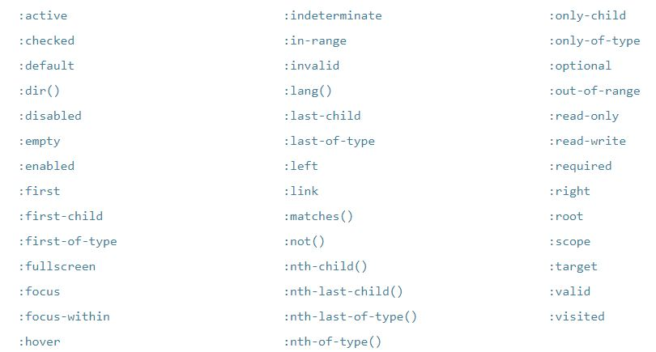
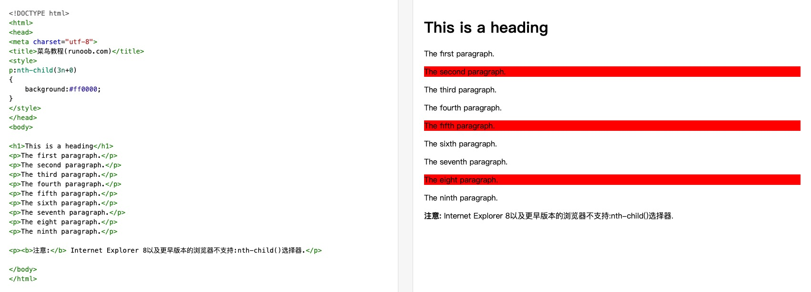
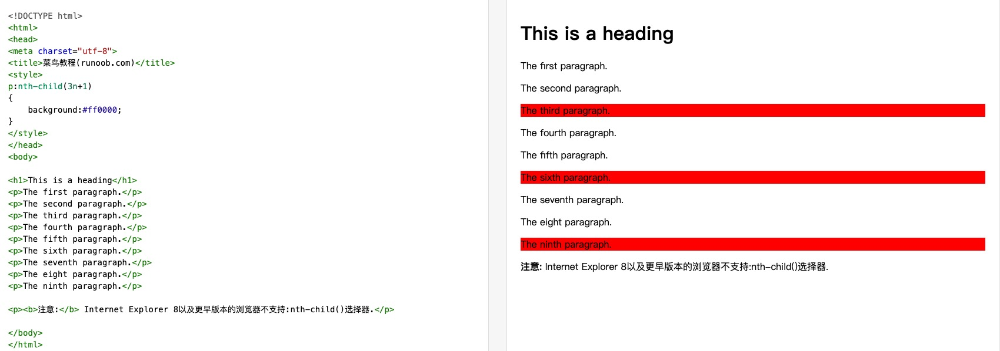

伪类和伪元素——伪选择器
该选择器不选择元素，而是选择只在某些特定背景下的元素，或者选择元素的某些部分。它们有两种主要类型 ： 伪类和伪元素。
伪类（Pseudo-class）选择器
一个 CSS 伪类（pseudo-class） 是一个以冒号(:)作为前缀，被添加到一个选择器末尾的关键字。
伪类只用于当元素处于某种状态时为所选择的元素设置样式。
你可能希望某个元素在处于某种状态下呈现另一种样式，例如当鼠标悬停在元素上面时，或者当一个复选框被禁用或被勾选时，又或者当一个元素是它在 DOM 树中父元素的第一个子元素时。

伪类的实质是将某种假想的类关联到伪类相关的元素上。
就像这样：
<div>
<p class="first-child">These are the necessary steps:</p>
<ul>
<li class="first-child">Insert key</li>
<li>Turn key <strong class="first-child">clockwise</strong></li>
<li>Push accelerator</li>
</ul>
<p> Do <em class="first-child">not</em> push the brake at the same time as the accelerator.</p>
</div>
一个伪类（Pseudo-class）的例子
HTML：
CSS：
/* 这些样式将在任何情况下应用于我们的链接 */
a {
color: blue;
font-weight: bold;
}
/* 我们想让被访问过的链接和未被访问的链接看起来一样 */
a:visited {
color: blue;
}
/* 当光标悬停于链接，键盘激活或锁定链接时，我们让链接呈现高亮 */
a:hover,
a:active,
a:focus {
color: darkred;
text-decoration: none;
}
效果图：


主动学习
HTML：
<ul>
<li><a href="#">United Kingdom</a></li>
<li><a href="#">Germany</a></li>
<li><a href="#">Finland</a></li>
<li><a href="#">Russia</a></li>
<li><a href="#">Spain</a></li>
<li><a href="#">Poland</a></li>
</ul>
CSS：
ul {
padding: 0;
}
li {
padding: 3px;
margin-bottom: 5px;
list-style-type: none;
}
a {
text-decoration: none;
color: black;
}
a:hover{
text-decoration: underline;
color: red;
}
li:nth-of-type(even){
background-color: #ccc;
}
li:nth-of-type(odd){
background-color: #eee;
}
效果图：


伪元素（Pseudo-element）
伪元素（Pseudo-element）跟伪类很像，但它们又有不同的地方。它们都是关键字，但伪元素前缀是两个冒号 (::) ， 是添加到选择器后面去选择某个元素的某个部分。
双冒号是在css3规范中引入的,用于区分伪类和伪元素。如果你的网站只需要兼容webkit、firefox、opera等浏览器，建议对于伪元素采用双冒号的写法，如果不得不兼容IE浏览器，还是用CSS2的单冒号写法比较安全。

伪元素的实质是在文档中插入假想的元素，插入的元素在默认情况下是行内元素。
展示一个简单的 CSS 例子，就是如何在所有超链接元素后面的增加一个箭头：
HTML：
<ul>
<li><a href="https://developer.mozilla.org/en-US/docs/Glossary/CSS">CSS</a> defined in the MDN glossary.</li>
<li><a href="https://developer.mozilla.org/en-US/docs/Glossary/HTML">HTML</a> defined in the MDN glossary.</li>
</ul>
CSS：
/* 所有含有"href"属性并且值以"http"开始的元素，
将会在其内容后增加一个箭头（去表明它是外部链接）
*/
[href^=http]::after {
content: '⤴';
}
效果图：

主动学习
HTML：
<p>This is my very important paragraph.
I am a distinguished gentleman of such renown that my paragraph
needs to be styled in a manner befitting my majesty. Bow before
my splendour, dear students, and go forth and learn CSS!</p>
CSS：
p::first-line {
font-weight: bold;
}
p::first-letter {
font-size: 3em;
border: 1px solid black;
background: red;
display: block;
float: left;
padding: 2px;
margin-right: 4px;
}
效果图：

额外的收获：
伪类
:link 未访问的链接。
:visited 已访问的链接。
:active 当用鼠标交互时，它指的是用户按下按键和松开按键之间的时间。匹配被用户激活的元素。
:foucus 用于选取获得焦点的元素（如表单的input文本域），当用户单击一个元素或通过键盘的 “tab” 键选择它时触发。
例子：
input:focus
{
background-color: yellow;
color: red;
}
:hover 当用户鼠标指针悬停时触发。
由于层叠的关系，所以

:nth-of-type(n)与:nth-child(n)
nth（第n个）
odd（奇数的）
even（偶数的）

ele:nth-of-type(n)是指在ele的父元素下给定的同一类型的第n个ele元素。
ele:nth-child(n)是指在ele的父元素下第n个元素，与类型无关。
nth-child(obb)（奇数行）
nth-child(even)（偶数行）。
nth-child(n) 中的 n 表示的是 第几个元素，值从 1 开始
nth-child(an + b) 中的 n 代表 从 0 开始，依次递增的自然数
nth-child(an + b) 的写法是固定的，不能颠倒，写成nth-child(b + an)无效 。
an+b按照位置先后顺序从1开始排序，选择的结果为第（an+b）个元素的集合（n=0，1，2，3...）。
n 代表 从 0 开始，依次递增的自然数。
当a 为正数时，an + b 的最大值为所有子元素的个数，超过该值n 就停止递增 （a>0时,必须满足an+b<=子元素的个数。否则n 停止递增。）


当a的值为正整数是，2n - 1 的最大值不能超过li的个数也就是 8。
第一次： n = 0 2n-1=-1 小于8成立 执行nth-child(-1) -1 < 1 运行无效果
第二次： n = 1 2n-1= 1 小于8成立 执行nth-child(1) 将第一个元素文字颜色设置为红色
....
第六次： n = 5 2n-1= 9 大于8 停止循环
-------------------------------------------------------------------------------------------


当a 为负数时， an + b 的最大值不能小于 1, 小于1 ，n 停止递增（a<0时，必须满足an+b>=1。否则n 停止递增。）
a = -2 为负数，取开最小值， an + b 的最小值不能小于 1
第一次： n = 0 -1*0 + 5 = 5 5 > 1 执行nth-child(5)
第二次: n = 1 -1*1 + 5 = 4 4 > 1 执行nth-child(4)
第三次： n = 2 -1*2 + 5 = 3 3 > 1 执行nth-child(3)
第四次： n = 3 -1*3 + 5 = 2 2 > 1 执行nth-child(2)
第四次： n = 4 -1*4 + 5 = 1 1 = 1 执行nth-child(1)
第四次： n = 5 -1*4 + 5 = 0 0 < 1 结束，停止执行
关于n取值扩展：
:nth-child()与nth-of-type() 的区别
例子：
<div>
<ul class="demo">
<p>zero</p>
<li>one</li>
<li>two</li>
</ul>
</div>
.demo li:nth-child(2) 选择的是 <li>one</li>节点。
.demo li:nth-of-type(2) 选择的是 <li>two</li>节点。
li:nth-child(2)是指<ul>元素下第2个<li>元素，li:nth-of-type(2)是指<ul>元素下同类型的<li>中第2个<li>元素。
p:nth-child(n)
表示父元素下的每个<p>元素。 这与类型元素选择器选择p元素相同。（尽管更具体明确）。
注意 p 元素前面还有一个元素的情况：


参考：